No se encontraron diagramas coincidentes
Prueba con otros términos de búsqueda o selecciona otro centro.
Los tres centros
Transversal


Centro de Idiomas
Nivel I · Programa IMEMI03 · Materia ESEP · Partes I01–I12 (2026) · Elaborado por: Dagner Anibal Chuman Lluen · ficha técnica
Flujos base7 diagramas


Abrir el periodo4 diagramas


Matrícula13 diagramas


Centro de Computación
Nivel C · Programa CMEMC38 · Materia ESEC · Partes X01–X07 (2026) · Elaborado por: Dagner Anibal Chuman Lluen · ficha técnica
Demostraciones para la reunión2 diagramas


Flujos base6 diagramas


Abrir el periodo4 diagramas


Matrícula12 diagramas


Centro de Emprendimiento
Nivel M · Programa MMEMM01 · Materia ESGE · Partes P01–P06 (2026) · Elaborado por: Dagner Anibal Chuman Lluen · ficha técnica